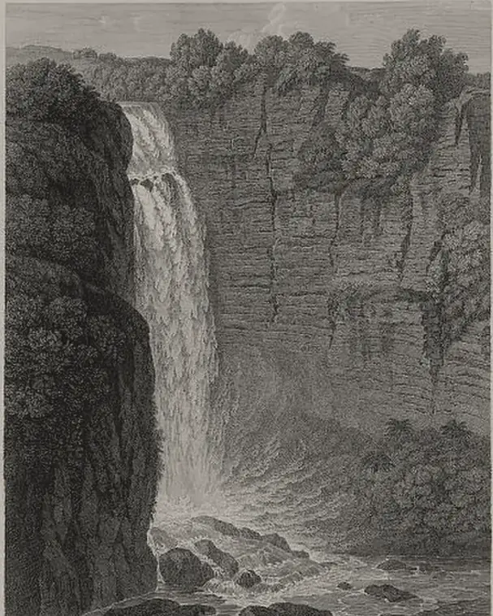

· Edición 24 · 6 min de lectura
Riesgo de apagón en 2027: el seguro que pagamos no alcanza, y ahorrar a tiempo ya evitó uno en 2016

Grabado de Wilhelm Friedrich Gmelin según un dibujo de Alexander von Humboldt, 1810 · Dominio público, Biblioteca del Congreso de Estados Unidos, vía Wikimedia Commons
Riesgo de apagón en 2027: el seguro que pagamos no alcanza, y ahorrar a tiempo ya evitó uno en 2016
En pocas palabras. Seis de cada diez kilovatios que puede producir Colombia dependen del agua de los ríos, y El Niño los está secando. XM, la empresa que opera el sistema eléctrico, advierte que podría faltar luz entre febrero y abril de 2027. Desde 2006 los usuarios pagan en la factura un seguro para que eso no pase, y el respaldo no está llegando completo. La salida que ya funcionó aquí, en 2016, fue ahorrar a tiempo y con premio.
Cómo se conecta. Los ríos que secan El Niño (edición 18) mueven las hidroeléctricas; sin agua entran las térmicas, con el gas que ya compramos en barco (edición 8).
Qué pasó. Piense en un seguro del carro que usted paga cada mes. El día del choque, la aseguradora dice que el taller no tiene repuestos. Así está la luz.
Las señales de las últimas semanas:
- Llueve poco. Al 1 de octubre, los ríos que llenan los embalses traían 57 de cada 100 litros de un año normal, según el boletín de XM del 2 de octubre.
- Se gasta más que nunca. En septiembre, el país usó en promedio 266,8 gigavatios hora al día, un récord. Un gigavatio hora alcanza para unas 7.000 casas durante un mes. (Conocimiento general.)
- El respaldo no llega a la meta. Cuando falta agua, entran las térmicas, las plantas que queman gas, carbón o diésel. La CREG, la comisión que pone las reglas del sector, declaró desde el 7 de septiembre un período de riesgo y les fijó un mínimo de 95 gigavatios hora al día. A mediados de septiembre producían entre 76 y 88.
Según XM, podría quedar gente sin luz si coinciden cinco cosas: demanda récord, ríos bajos, térmicas que no rinden, obras atrasadas y embalses por debajo de 30%. Es un escenario, no una predicción.
El 6 de octubre, el Gobierno expidió el Decreto 1491: las térmicas ya pueden comprarle diésel a varios distribuidores, no a uno solo, para que un problema de transporte no las apague.
Cómo llegamos aquí.
- Un país que vive del agua. A diciembre de 2025, 62,8% de la capacidad para generar era hidráulica, según XM. Con El Niño, esa es la parte que se seca.
- Un seguro que cobra más de lo que respalda. Desde 2006, la factura trae el cargo por confiabilidad: se les paga a los generadores para que tengan energía disponible en la sequía. En julio, la Superservicios, la entidad que vigila los servicios públicos, calculó que los usuarios han pagado 97,1 billones de pesos de 2025 por ese cargo. Concluyó que la capacidad del sistema no creció en proporción: 90 de cada 100 medidas en los planes de los generadores son acciones comerciales, como contratos, que no agregan plantas.
- Las plantas nuevas no llegan. De 4.475 megavatios que debían entrar en 2026, al 2 de julio habían entrado 331: unos 7 de cada 100, según XM. Y 42 obras de transmisión van atrasadas.
- El gas no alcanza. Las térmicas dependen cada vez más de gas importado, más caro. Según La República, ya usan 86 de cada 100 unidades de la capacidad del país para traerlo.
Ya pasó antes. El 2 de marzo de 1992 empezó el gran racionamiento. Duró hasta el 7 de febrero de 1993. En Bogotá se cortaba la luz unas nueve horas al día. Las causas se parecen a las de hoy: sequía, térmicas sin mantenimiento y obras atrasadas. (Conocimiento general: de esa crisis salieron las leyes de servicios públicos de 1994.)
¿Hay salida? Hay una que ya funcionó aquí. En 2016, con El Niño y un incendio que sacó de servicio la central de Guatapé, el Gobierno lanzó «Apagar paga», con premios en la factura para quien ahorrara. Entre el 7 de marzo y el 1 de abril, el país ahorró en promedio 6,6% al día, y el 2 de abril el presidente descartó el racionamiento.
Brasil hizo algo más fuerte en 2001: metas de ahorro para cada hogar, con premios y castigos, durante nueve meses. Un estudio de Francisco Costa y François Gerard, publicado en 2021 en una revista de economía de la Universidad de Chicago, encontró que más de diez años después la mitad de ese ahorro seguía ahí. Una vez aprendido, el ahorro no se desaprendió del todo.
La herramienta ya está en marcha: desde septiembre, con el Plan Energía YA, quien baje más de 10% de su meta de consumo recibe un descuento, y quien la pase en más de 10% paga un cobro adicional.
Pero ojo. Ahorrar compra tiempo; no hace plantas.
- En 2016 también ayudó el clima. El propio Gobierno dijo que fueron clave las térmicas y la lluvia que volvió. Y los premios costaron más de un billón de pesos de entonces, según una columna publicada en Portafolio.
- Brasil pagó un precio. El ahorro de 2001 coincidió con un año de economía casi quieta. (Conocimiento general.)
- El seguro no se arregla rápido. Un estudio de 2014 de David Harbord y Marco Pagnozzi, economistas que revisaron las subastas de este cargo, advierte que su diseño en Colombia trae riesgos. (Conocimiento general: una regla nueva tarda años en convertirse en plantas.)
- El vecino ya lo vivió. En Ecuador, en 2024, la sequía obligó a cortes de hasta 14 horas diarias. El Banco Central de ese país calculó pérdidas de 1.916 millones de dólares. Desde el 7 de septiembre, Colombia dejó de venderle energía.
Dos lecturas
Arreglar el seguro ya. Si el cargo paga contratos y no plantas, los usuarios financian un respaldo que no aparece cuando hace falta. La Superservicios propone pagar por respaldo físico y premiar a quien entre a tiempo. Esperar otra década repite 1992 con más gente conectada.
No cambiar las reglas en plena sequía. Acolgen, el gremio de los generadores, dice que el cargo es un seguro que sí funcionó: el dinero se invirtió en plantas que hoy sostienen el sistema. Cambiarlo de afán asusta a quien tiene que invertir y puede atrasar las plantas que se necesitan.
Quién decide y cuándo
Quién decide. La CREG fija las reglas: el cargo, el mínimo térmico y el premio al ahorro. El Ministerio de Minas expide decretos como el 1491. XM opera el sistema y avisa.
Cuándo. XM ubica el mayor riesgo entre febrero y abril de 2027. La CREG abrió en abril el análisis para modernizar el cargo, sin fecha para la nueva regla.
Cómo participar. La CREG publica sus proyectos de resolución para comentarios en su página, y cualquier persona puede opinar. (Conocimiento general.)
Seguimiento de la decisión
Pendiente · sin fecha fija
Comisión de Regulación de Energía y Gas (CREG): Reformar el cargo por confiabilidad para que pague respaldo físico que llegue a tiempo, y sostener las medidas del período de riesgo (generación térmica mínima e incentivo al ahorro) hasta que pase El Niño.
La CREG abrió en abril de 2026 el análisis para modernizar el cargo; no encontramos fecha para la nueva regla. XM ubica la ventana de mayor riesgo entre febrero y abril de 2027.
La paradoja del día
Desde 2006, los usuarios han pagado 97,1 billones de pesos por un seguro contra la sequía. Llega la sequía, y la medida que más rápido funciona es pedirles a los mismos usuarios que apaguen la luz.
Para conversar
La pregunta. Si toca ahorrar, ¿quién debería apretarse primero: las casas, las fábricas o los edificios públicos?
Qué puede hacer usted. Preguntarle a su empresa de energía cuál es su meta de consumo en el Plan Energía YA. Si baja más de 10% de esa meta, recibe un descuento en la factura.
Para leer más
Energía y civilización. Una historia, de Vaclav Smil (Arpa, 2021; original de MIT Press, 2017). Un historiador de la energía cuenta cómo cada sociedad ha dependido de sus fuentes, del músculo al agua y al carbón. Ayuda a ver por qué un país que vive de sus ríos queda expuesto cuando deja de llover.
¿Le interesa ver las fuentes?
26 fuentes: 2 académicas, 4 oficiales, 1 de una organización, 19 de prensa.
- Prensa XM (vía Infobae). Boletín energético advirtió 5 factores que podrían llevar al sistema eléctrico colombiano a un racionamiento en 2027
- Prensa La FM. En medio del racionamiento de gas por SPEC, XM alerta por riesgo eléctrico
- Prensa Pulzo. Riesgo de desabastecimiento eléctrico en Colombia: alerta para el verano 2026-2027 según XM
- Oficial Comisión de Regulación de Energía y Gas (CREG). Documento CREG 901 431 de 2026: medidas transitorias para asegurar el abastecimiento de energía eléctrica (Resolución CREG 101 127 de 2026)
- Prensa El Tiempo. Creg ordena un mínimo de generación de energía térmica para evitar un apagón en Colombia por El Niño
- Prensa La República. Térmicas llevan 20 días con generación por debajo de recomendación de XM
- Oficial Presidencia de la República. Decreto 1491 del 6 de octubre de 2026 (abastecimiento de combustibles líquidos para plantas térmicas)
- Prensa El Tiempo. Gobierno flexibiliza el abastecimiento de combustibles para respaldar a las térmicas ante el fenómeno de El Niño
- Oficial Superintendencia de Servicios Públicos Domiciliarios. Sobre-remuneración y déficit de respaldo físico: evaluación del cargo por confiabilidad (2006-2026)
- Prensa La República. Usuarios han transferido a las empresas generadoras de energía 97,1 billones desde 2006
- Prensa El País (Cali). Cargo por confiabilidad: Acolgen defiende el mecanismo mientras Superservicios cuestiona sus resultados
- Prensa Valora Analitik. A junio, solo ha entrado el 7,4 % de los proyectos de energía previstos para 2026; XM advierte riesgos por El Niño
- Prensa La República. Generación de energía hidráulica pesa 62,8% en la matriz energética; la solar, 7,6%
- Oficial Comisión de Regulación de Energía y Gas (CREG). Circular 268 de 2026: inicio del análisis de impacto normativo para modernizar el mecanismo de confiabilidad
- Prensa Portafolio. Plan Energía YA: Gobierno activa medidas para enfrentar El Niño y evitar desabastecimiento
- Prensa La República. Importaciones de gas para demanda térmica alcanzan 86% de la capacidad
- Prensa Portafolio (columna). Racionar no paga
- Organización Celsia, informe integrado 2022. Hechos relevantes: un apagón que nos iluminó
- Prensa Noticias Caracol. Cómo fue la hora Gaviria que se implementó con el apagón de 1992
- Prensa El Colombiano. Apagar Paga: la campaña de ahorro de energía llegó a su fin
- Prensa El Heraldo. Presidente Santos descartó un racionamiento en el país
- Académica Journal of Political Economy (Costa y Gerard, 2021). Hysteresis and the Welfare Effect of Corrective Policies: Theory and Evidence from an Energy-Saving Program
- Académica MPRA, Universidad de Múnich (Harbord y Pagnozzi, 2014). Britain's electricity capacity auctions: lessons from Colombia and New England
- Prensa El Mercurio (Cuenca). Economía ecuatoriana cayó 1,4 % por los apagones
- Prensa Vistazo. Ecuador inicia apagones programados de hasta 14 horas diarias por tres días
- Prensa El Colombiano. Colombia suspende venta de energía a Ecuador y frena un negocio de 530.683 millones
Glosario
- XM: empresa que opera el sistema eléctrico nacional y administra el mercado de energía.
- CREG: Comisión de Regulación de Energía y Gas; pone las reglas del sector.
- Térmica: planta que produce electricidad quemando gas, carbón o diésel. No depende de la lluvia.
- Gigavatio hora (GWh): unidad de energía. Un millón de kilovatios hora; un hogar promedio gasta unos 150 kilovatios hora al mes.
- Cargo por confiabilidad: pago que se incluye en la factura para que los generadores tengan energía disponible en las sequías.
- Energía firme: la que una planta puede garantizar aun en un año muy seco.
- Período de riesgo de desabastecimiento: estado que declara la CREG cuando hay peligro de que falte energía; activa reglas especiales.
- El Niño: calentamiento del océano Pacífico que le quita lluvia a buena parte de Colombia.
Nota metodológica
Hicimos unas 60 búsquedas en español e inglés: barrido de noticias del 6 al 8 de octubre (Colombia, América Latina y mundo), revisión de los temas abiertos y búsquedas dirigidas de documentos de XM, la CREG, la Superservicios y estudios sobre ahorro de energía y sobre el cargo por confiabilidad. No pudimos abrir ningún documento completo; trabajamos con resúmenes y resultados de búsqueda, y no atribuimos a los estudios más de lo que dicen sus resúmenes. De 26 fuentes, 7 no son de prensa: esta vez la prensa pesa más de lo que quisiéramos, porque los boletines de XM solo los pudimos conocer por lo que publicaron los medios.
Hoy hay dos ediciones. Esta es la principal; la segunda, sobre el subsidio al diésel, es la edición 25.
El 5 de octubre contamos el racionamiento de agua por El Niño. La luz es otro sistema, con otras reglas y otros responsables, y hay hechos nuevos (el boletín de XM del 2 de octubre y el decreto del 6). Por eso va como tema nuevo y lleva esa edición en seguimiento, junto con la del gas.
Temas abiertos: no encontramos decisión de la CAR sobre las concesiones de agua ni el decreto de emergencia por El Niño; tampoco novedades de fondo del crédito a las EPS, del proyecto de drones o de la consulta previa. El presupuesto de 2027 se vota del 13 al 15 de octubre, la Comisión de Concertación del salario mínimo se reúne el 13 y la segunda vuelta en Brasil es el 25.
Quedó sin verificar o con límites:
- Las cifras del boletín de XM del 2 de octubre (aportes de 56,83% y demanda de 266,81 gigavatios hora al día) las conocemos por un solo medio. (Fuente única; no verificado.)
- Los niveles de los embalses cambian según la fecha y la fuente (entre 77% y 83% en septiembre); por eso no los usamos.
- La equivalencia de un gigavatio hora con unas 7.000 casas es nuestra, con un consumo de unos 150 kilovatios hora al mes por hogar. (Conocimiento general.)
- Las horas de corte de 1992 varían según la fuente y la región: un estudio citado por Celsia habla de unas 10 horas al día en promedio.
- El estudio de la Superservicios lo conocemos por su presentación y por la prensa. Acolgen discute sus conclusiones.
- Los estudios de Costa y Gerard y de Harbord y Pagnozzi los conocemos por sus resúmenes. El de Costa y Gerard es un estudio con datos de consumo de millones de hogares; el de Harbord y Pagnozzi es un análisis de diseño de subastas.
- Las cifras de Ecuador son del Banco Central de ese país citadas por la prensa; los gremios ecuatorianos dan cifras mucho mayores.
Puntaje de impacto. Filtro primero (las cuatro condiciones de nudo) y luego puntaje de 1 a 3 en alcance, gravedad, duración, cercanía y decisión en curso; gravedad y cercanía valen doble (máximo 21). Un segundo o tercer tema entra solo con 17 o más y si no repite un asunto de los últimos siete días. Para los temas del mundo, la cercanía se mide por el canal por el que llegan a Colombia.
| Tema | Alcance | Gravedad | Duración | Cercanía | Decisión | Total | Resultado |
|---|---|---|---|---|---|---|---|
| Riesgo de apagón y cargo por confiabilidad | 3 | 2 | 2 | 3 | 3 | 18 | Elegido (edición 24) |
| Subsidio al diésel | 3 | 2 | 2 | 3 | 2 | 17 | Elegido (edición 25) |
| Guerra Estados Unidos-Irán (mundo; canal: combustibles, fertilizantes y precios) | 3 | 2 | 2 | 3 | 2 | 17 | Mismo canal que la edición 25: va dentro de ella |
| Deforestación y la operación de Interpol | 2 | 2 | 3 | 3 | 1 | 16 | Sin decisión en curso |
| Regalías 2027-2028 | 2 | 2 | 2 | 3 | 2 | 15 | Menor impacto |
| Inflación de septiembre | - | - | - | - | - | - | Dato de coyuntura |
| Estatuto antiterrorista | - | - | - | - | - | - | Sin texto radicado |
El riesgo de apagón pasa las cuatro condiciones de nudo: se repite (1992, 2016 y ahora), tiene un mecanismo (un sistema que depende del agua y un cargo que paga energía disponible sin exigir que llegue a tiempo), alguien lo puede cambiar (CREG, Ministerio de Minas, generadores) y el daño es medible (cortes, pérdidas como las de Ecuador y 97,1 billones pagados).
El grabado es el Salto del Tequendama, en el río Bogotá, según un dibujo de Alexander von Humboldt grabado en Roma en 1810 para su libro sobre las cordilleras. Lo usamos para evocar la fuerza del agua de la que depende la luz del país; es de otra época y no muestra nada de hoy. Le recortamos los márgenes de la página. La imagen original es pequeña, por eso se ve con menos detalle.
El libro no está en Santo & Seña. Lo elegimos por el tema y confirmamos autor, año, editorial y traducción en fichas de librerías y en el catálogo de la edición original.